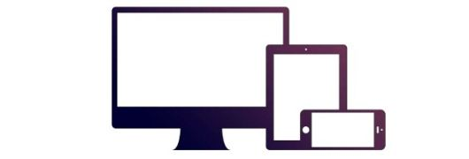

Bootstrap 简介
Bootstrapとは何ですか？
Bootstrapは、WebアプリケーションやWebサイトを迅速に開発するためのフロントエンドフレームワークです。BootstrapはHTML、CSS、JAVASCRIPTに基づいています。
历史
Bootstrap はTwitterのMark OttoとJacob Thornton開発された。Bootstrap は 2011 年 8 月に GitHub 上で公開されたオープンソース製品です。
なぜBootstrapを使うのか？
- 移动设备优先：Bootstrap 3 以降、フレームワークにはライブラリ全体にわたるモバイルファーストのスタイルが含まれています。
- 浏览器支持：すべての主要ブラウザーが Bootstrap をサポートしています。


- 容易上手：HTML と CSS の基礎知識があれば、Bootstrap の学習を始めることができます。
- 响应式设计：Bootstrap のレスポンシブ CSS は、デスクトップ、タブレット、スマートフォンに自動的に適応します。レスポンシブデザインの詳細については、こちらを参照してください。Bootstrap 响应式设计。

- これは、開発者がインターフェースを作成するためのシンプルで統一されたソリューションを提供します。
- 強力な組み込みコンポーネントが含まれており、カスタマイズが容易です。
- また、Web ベースのカスタマイズも提供します。
- オープンソースです。
Bootstrapパッケージの内容
- 基本结构：Bootstrap は、グリッドシステム、リンクスタイル、背景を備えた基本構造を提供します。これは、Bootstrap 基本结构部分の詳細解説です。
- CSS：Bootstrap には次の機能が備わっています：グローバルな CSS 設定、基本的な HTML 要素のスタイル定義、拡張可能なクラス、そして高度なグリッドシステム。これは、Bootstrap CSS部分の詳細解説です。
- 组件：Bootstrap には、画像、ドロップダウンメニュー、ナビゲーション、警告ボックス、ポップアップなどを作成するための十数個の再利用可能なコンポーネントが含まれています。これは、布局组件部分の詳細解説です。
- JavaScript 插件：Bootstrap には、十数個のカスタム jQuery プラグインが含まれています。すべてのプラグインを直接含めることも、個別に含めることもできます。これは、Bootstrap 插件部分の詳細解説です。
- 定制：Bootstrap のコンポーネント、LESS 変数、jQuery プラグインをカスタマイズして、独自のバージョンを作成できます。
オンラインの例
当サイトのBootstrapチュートリアルには100以上の例が含まれています。
オンラインエディタを使用してコードを編集し、実行ボタンをクリックして結果を確認できます。
Bootstrap 实例
<div class="container">
<div class="jumbotron">
<h1>私の最初のBootstrapページ</h1>
<p>重置窗口大小，查看响应式效果！</p>
</div>
<div class="row">
<div class="col-sm-4">
<h3>Column 1</h3>
<p>学ぶのは技術だけでなく、夢でもある！</p>
<p>どんなにすごい夢でも、お前のバカみたいな粘りには敵わない！</p>
</div>
<div class="col-sm-4">
<h3>Column 2</h3>
<p>学ぶのは技術だけでなく、夢でもある！</p>
<p>どんなにすごい夢でも、お前のバカみたいな粘りには敵わない！</p>
</div>
<div class="col-sm-4">
<h3>Column 3</h3>
<p>学ぶのは技術だけでなく、夢でもある！</p>
<p>どんなにすごい夢でも、お前のバカみたいな粘りには敵わない！</p>
</div>
</div>
</div>
尝试一下 »
更多实例
Bootstrap 实例2
<div class="table-responsive">
<table class="table table-striped table-bordered">
<thead>
<tr>
<th>#</th>
<th>Name</th>
<th>Street</th>
</tr>
</thead>
<tbody>
<tr>
<td>1</td>
<td>Anna Awesome</td>
<td>Broome Street</td>
</tr>
<tr>
<td>2</td>
<td>Debbie Dallas</td>
<td>Houston Street</td>
</tr>
<tr>
<td>3</td>
<td>John Doe</td>
<td>Madison Street</td>
</tr>
</tbody>
</table>
</div>
尝试一下 »
「試してみる」ボタンをクリックして、それがどのように機能するかを確認してください。
其他扩展